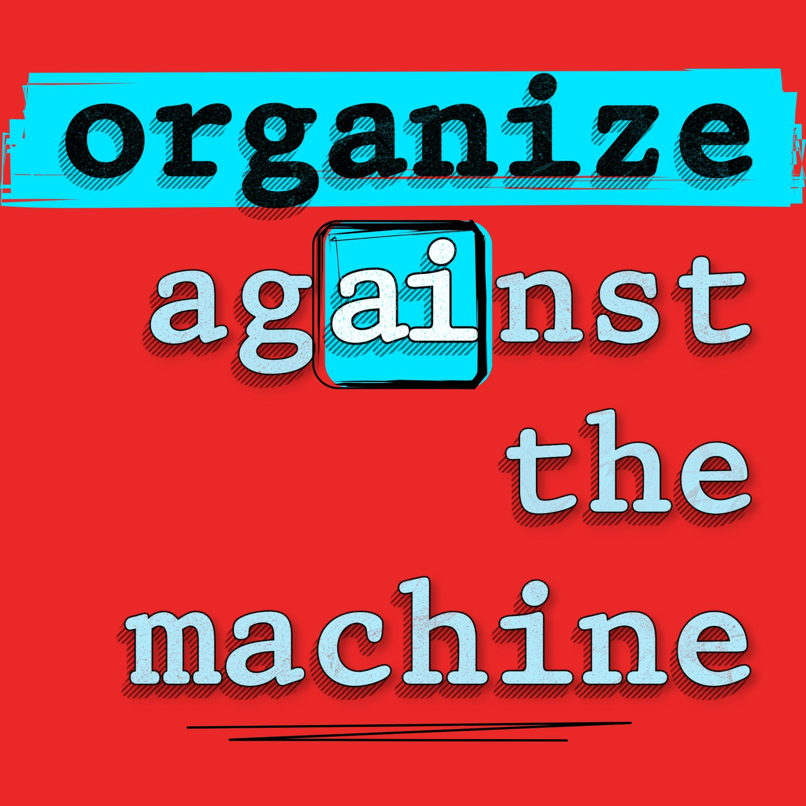

interview‑first
Every episode brings in someone who actually knows something: organizers, researchers, workers, the occasional executive. One host plays the very-online listener, the other supplies the grounding, and the guest does the rest.

The richest companies in history are trying to render us obsolete. We’re figuring out how to stop them, together.
Join labor organizer Cassie Pritchard, ai journalist Garrison Lovely, and guests as they explore the world’s most bizarre and dangerous industry.
Every episode brings in someone who actually knows something: organizers, researchers, workers, the occasional executive. One host plays the very-online listener, the other supplies the grounding, and the guest does the rest.
Diagnosing the problem is the easy part. Cassie is here because the step after naming it is building something that can fight it, which is a skill nobody in the AI discourse seems to have.
Most shows about AI are made by the industry, for the industry. This one starts from the assumption that the technology is real and the people it’s pointed at deserve a say in it.
A Starbucks barista who helped organize her store, and has spent the years since in the unglamorous business of getting workers to act together. She also worked in data on the 2008 Obama campaign and ran a startup at 21.
She came to the same worries about AI that Garrison did, from a completely different direction.
Author of Obsolete: The AI Industry’s Trillion-Dollar Race to Replace Us—and How to Stop It (Nation Books, September 29). Former Reporter in Residence at the Omidyar Network.
He has covered the industry for The New York Times, Nature, Bloomberg, TIME, The Guardian, MIT Technology Review, Jacobin, and The Nation.
Garrison’s newsletter is where the show gets announced first. It’s also where a lot of the reporting behind it ends up.